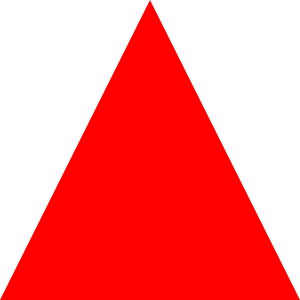
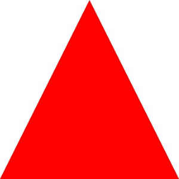

Analista de TI &
Desenvolvedor
Front End
Localizado em Belo Horizionte 
Localizado em Belo Horizionte 
Atuando na área de TI como Analista de Suporte e também Desenvolvedor Front End. Experiência com infraestrutura, hardware, atendimento B2B, coordenação de equipe, ferramentas de gestão, HTML, CSS, JavaScript. Buscando sempre trabalhar com novas tecnologias, pessoas e desafios.
Atuando desde Analista Junior, até Analista Pleno e posteriormente coordenando todo o setor de Suporte da empresa. Trabalhando diretamente com todas as tecnologias de gestão de pessoas, planejamento estratégico para novas etapas da empresa, integração entre sistemas, implantação de novas ferramentas internas, lançamento de novos Softwares e programa de ensino para novos colaboradores.
Estágio como Analista de Suporte, focado em atendimento B2B para realizar suporte de Software próprio da empresa. Trabalhando diretamente com sistema ERP, geração de notas fiscais e confecção de relatórios dinâmicos em HTML, CSS e JS.
Atendimento ativo e receptivo para suporte das operações da CEMIG. Lidando diretamente com o cliente final, e atuando com a abertura de tickets, os, registro de demandas, auxilio de novos colaboradores
Fromando como tecnólogo em Análise e Desenvolvimento de Sistemas pela UNIBH 🎓. Além disso me mantenho sempre atualizado com cursos intensivos online e presencial.